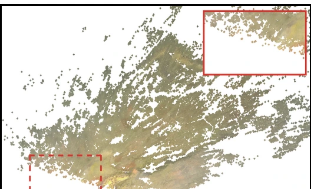
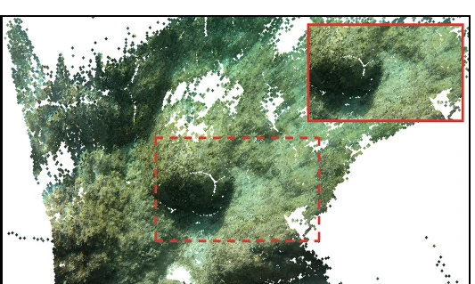
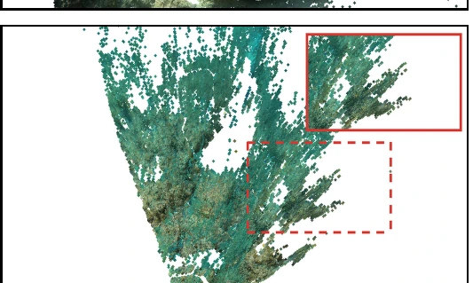
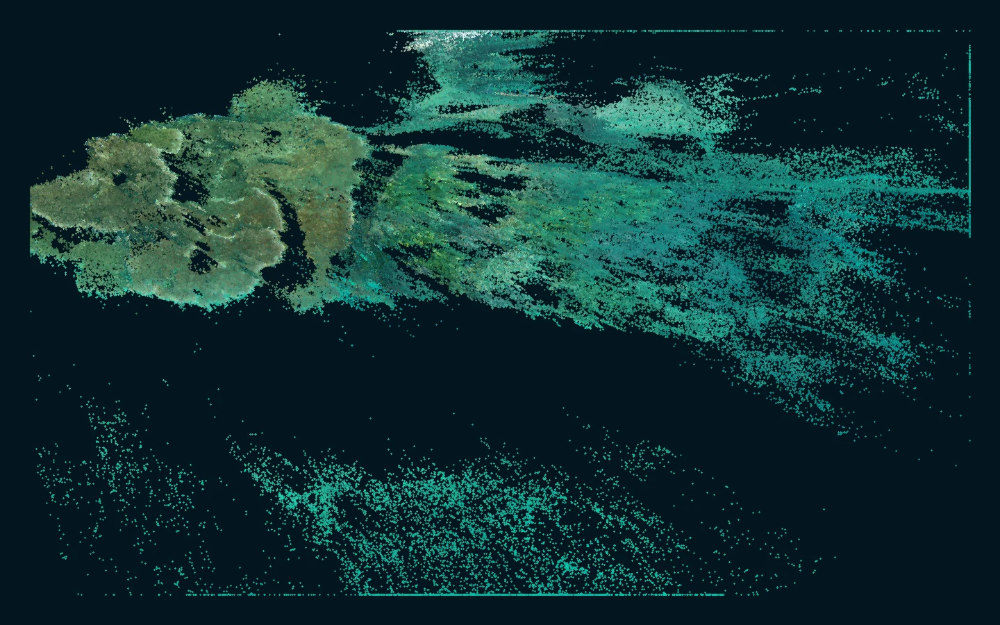

Address the surface
Treat every backbone-predicted 3D point as a surface anchor and reproject it into neighboring views.
Surface persistence for underwater geometry
SPUME evaluates whether provisional 3D surfaces remain supported across views, then uses that evidence to refine depth without overwriting reliable backbone geometry.
Hubei University of Technology · Wuhan National Laboratory for Optoelectronics, HUST
The problem
Particles, caustics, scattering changes, and temporary occlusions can be consolidated into incorrect 3D geometry. SPUME makes local surface support explicit before applying a correction.
Treat every backbone-predicted 3D point as a surface anchor and reproject it into neighboring views.
Robustly normalize and fuse point, depth, feature, normal, and multi-view support cues into SSDF.
Condition a zero-initialized log-depth refiner while cameras, rays, and the feed-forward backbone remain fixed.
Method
The pipeline follows a single path from frozen backbone geometry to a Surface-Support Deficit Field and bounded depth correction.
Surface-Support Deficit Field
Each cue responds to a different failure mode. Median/MAD normalization places them on a comparable window-relative scale, while weighted fusion highlights predicted surfaces with unusually weak cross-view support.
Results
Final-manuscript results show consistent gains in depth, point-cloud fidelity, temporal stability, sequence transfer, and zero-shot backbone transfer.
SPUME reconstructions
SPUME suppresses displaced surface samples while retaining persistent scene structure. The panels below are the SPUME-only reconstruction outputs from the final manuscript.



Water3D scenes
Representative observations are drawn directly from the Water3D output directories used for the site showcase.
Reef laboratory
Complex coral structure with moving fish, illumination variation, and open-water scattering.Evaluation geometry
Web-ready previews are rendered from the original fused point clouds; the full-resolution outputs remain outside the repository.

Abstract
Feed-forward underwater multi-view reconstruction can encode particles, caustics, scattering changes, and temporary occlusions as persistent 3D structure. This transient geometry imprinting exposes three problems: image-space signals do not directly reveal whether a predicted 3D surface is supported across views; point, depth, feature, normal, and temporal cues have incompatible scales; and detecting weak support does not specify how geometry should be corrected without damaging reliable predictions.
We propose SPUME (Surface-Persistence-guided Underwater Multi-view Estimation) with three corresponding innovations. First, SPUME treats each backbone-predicted 3D point as a surface anchor and evaluates its cross-view consistency. Second, it robustly normalizes and fuses five complementary cues into a Surface-Support Deficit Field (SSDF). Third, SSDF conditions a bounded log-depth refiner while the backbone, camera estimates, and pixel rays remain fixed.